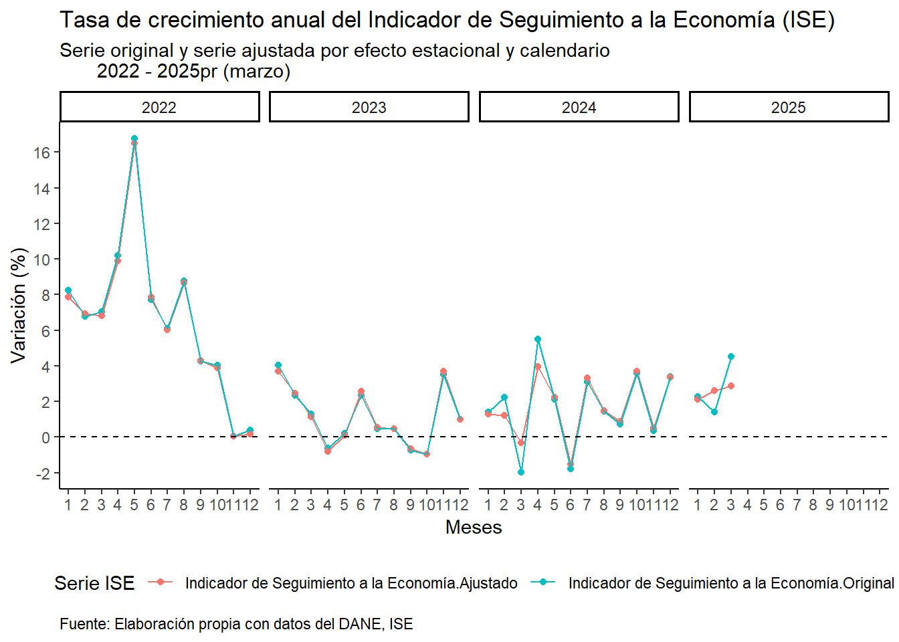

library(tidyverse)
library(readxl)
library(janitor)ISE Colombia
Leading economic indicator ISE
This document plots the ‘Indice del Seguimiento a la Economía’ (ISE). This is an index that yields the evolution of the economic activity in the Colombian economy in the short run. You can find the data set here.
The first step is to load the following libraries:
Then, we load the data:
Load data
# Original data
df1 = readxl::read_excel("anex-ISE-9actividades-ago2025.xlsx",
sheet = "Cuadro 1",
range = "A42:IO57",
col_names = FALSE)
# Data adjusted for seasonal and calendar effects
df2 = readxl::read_excel("anex-ISE-9actividades-ago2025.xlsx",
sheet = "Cuadro 2",
range = "A11:IO26",
col_names = FALSE)Keep in mind that original data is already in annual percentage change. But data adjusted for seasonal and calendar effects are in levels, so we need to compute the pct_change.
Indexing
# Original data
df1[1, 1] = "ano"
df1[2, 1] = "mes"
# Data adjusted for seasonal and calendar effects
df2[1, 1] = "ano"
df2[2, 1] = "mes"Lengthening Data
# Original data
df1 = df1 |>
tidyr::pivot_longer(cols = 14:249,
values_to = "value") |>
tidyr::fill(value) |>
tidyr::pivot_wider(names_from = 1,
values_from = value) |>
janitor::clean_names() |>
dplyr::select(ano:indicador_de_seguimiento_a_la_economia)# Data adjusted for seasonal and calendar effects
df2 = df2 |>
tidyr::pivot_longer(cols = 2:249,
values_to = "value") |>
tidyr::fill(value) |>
tidyr::pivot_wider(names_from = 1,
values_from = value) |>
janitor::clean_names() |>
dplyr::select(ano:indicador_de_seguimiento_a_la_economia)Merging Dataframes
# Now we merge both dataframes: original and data adjusted for seasonal and calendar effects by (año and mes)
data = df1 |>
dplyr::inner_join(df2,
by = c("ano", "mes"),
suffix = c("_original", "_ajustado"))
glimpse(data)Rows: 236
Columns: 30
$ ano <chr> …
$ mes <chr> …
$ na_original <chr> …
$ actividades_primarias_original <chr> …
$ agricultura_ganaderia_caza_silvicultura_y_pesca_explotacion_de_minas_y_canteras_original <chr> …
$ actividades_secundarias_original <chr> …
$ industrias_manufactureras_construccion_original <chr> …
$ actividades_terciarias_original <chr> …
$ suministro_de_electricidad_gas_vapor_y_aire_acondicionado_distribucion_de_agua_evacuacion_y_tratamiento_de_aguas_residuales_gestion_de_desechos_y_actividades_de_saneamiento_ambiental_original <chr> …
$ comercio_al_por_mayor_y_al_por_menor_reparacion_de_vehiculos_automotores_y_motocicletas_transporte_y_almacenamiento_alojamiento_y_servicios_de_comida_original <chr> …
$ informacion_y_comunicaciones_original <chr> …
$ actividades_financieras_y_de_seguros_original <chr> …
$ actividades_inmobiliarias_original <chr> …
$ actividades_profesionales_cientificas_y_tecnicas_actividades_de_servicios_administrativos_y_de_apoyo_original <chr> …
$ administracion_publica_y_defensa_planes_de_seguridad_social_de_afiliacion_obligatoria_educacion_actividades_de_atencion_de_la_salud_humana_y_de_servicios_sociales_actividades_artisticas_de_entretenimiento_y_recreacion_y_otras_actividades_de_servicios_actividades_de_los_hogares_individuales_en_calidad_de_empleadores_actividades_no_diferenciadas_de_los_hogares_individuales_como_productores_de_bienes_y_servicios_para_uso_propio_original <chr> …
$ indicador_de_seguimiento_a_la_economia_original <chr> …
$ na_ajustado <chr> …
$ actividades_primarias_ajustado <chr> …
$ agricultura_ganaderia_caza_silvicultura_y_pesca_explotacion_de_minas_y_canteras_ajustado <chr> …
$ actividades_secundarias_ajustado <chr> …
$ industrias_manufactureras_construccion_ajustado <chr> …
$ actividades_terciarias_ajustado <chr> …
$ suministro_de_electricidad_gas_vapor_y_aire_acondicionado_distribucion_de_agua_evacuacion_y_tratamiento_de_aguas_residuales_gestion_de_desechos_y_actividades_de_saneamiento_ambiental_ajustado <chr> …
$ comercio_al_por_mayor_y_al_por_menor_reparacion_de_vehiculos_automotores_y_motocicletas_transporte_y_almacenamiento_alojamiento_y_servicios_de_comida_ajustado <chr> …
$ informacion_y_comunicaciones_ajustado <chr> …
$ actividades_financieras_y_de_seguros_ajustado <chr> …
$ actividades_inmobiliarias_ajustado <chr> …
$ actividades_profesionales_cientificas_y_tecnicas_actividades_de_servicios_administrativos_y_de_apoyo_ajustado <chr> …
$ administracion_publica_y_defensa_planes_de_seguridad_social_de_afiliacion_obligatoria_educacion_actividades_de_atencion_de_la_salud_humana_y_de_servicios_sociales_actividades_artisticas_de_entretenimiento_y_recreacion_y_otras_actividades_de_servicios_actividades_de_los_hogares_individuales_en_calidad_de_empleadores_actividades_no_diferenciadas_de_los_hogares_individuales_como_productores_de_bienes_y_servicios_para_uso_propio_ajustado <chr> …
$ indicador_de_seguimiento_a_la_economia_ajustado <chr> …Dtype transformation
# First notice that some years have strings (preliminar numbers), so we need to replace them
ano = data |>
dplyr::distinct(ano)
ano$ano [1] "2006" "2007" "2008" "2009" "2010" "2011" "2012" "2013"
[9] "2014" "2015" "2016" "2017" "2018" "2019" "2020" "2021"
[17] "2022" "2023p" "2024pr" "2025pr"# Then, we replace the strings next to the years 2023, 2024 and 2025
data = data |>
dplyr::mutate(
ano = stringr::str_remove_all(ano, "[pr]"))# Now we transform the "string" format of months to "numeric"
data = data |>
dplyr::mutate(
mes = recode(mes,
"Enero" = 01, "Febrero" = 02,
"Marzo" = 03, "Abril" = 04,
"Mayo" = 05, "Junio" = 06,
"Julio" = 07, "Agosto" = 08,
"Septiembre" = 09, "Octubre" = 10,
"Noviembre" = 11, "Diciembre" = 12))# Now we transform the remaining variables to numeric
data = data |>
dplyr::mutate_at(vars(1, 4:30), as.numeric)
glimpse(data)Rows: 236
Columns: 30
$ ano <dbl> …
$ mes <dbl> …
$ na_original <chr> …
$ actividades_primarias_original <dbl> …
$ agricultura_ganaderia_caza_silvicultura_y_pesca_explotacion_de_minas_y_canteras_original <dbl> …
$ actividades_secundarias_original <dbl> …
$ industrias_manufactureras_construccion_original <dbl> …
$ actividades_terciarias_original <dbl> …
$ suministro_de_electricidad_gas_vapor_y_aire_acondicionado_distribucion_de_agua_evacuacion_y_tratamiento_de_aguas_residuales_gestion_de_desechos_y_actividades_de_saneamiento_ambiental_original <dbl> …
$ comercio_al_por_mayor_y_al_por_menor_reparacion_de_vehiculos_automotores_y_motocicletas_transporte_y_almacenamiento_alojamiento_y_servicios_de_comida_original <dbl> …
$ informacion_y_comunicaciones_original <dbl> …
$ actividades_financieras_y_de_seguros_original <dbl> …
$ actividades_inmobiliarias_original <dbl> …
$ actividades_profesionales_cientificas_y_tecnicas_actividades_de_servicios_administrativos_y_de_apoyo_original <dbl> …
$ administracion_publica_y_defensa_planes_de_seguridad_social_de_afiliacion_obligatoria_educacion_actividades_de_atencion_de_la_salud_humana_y_de_servicios_sociales_actividades_artisticas_de_entretenimiento_y_recreacion_y_otras_actividades_de_servicios_actividades_de_los_hogares_individuales_en_calidad_de_empleadores_actividades_no_diferenciadas_de_los_hogares_individuales_como_productores_de_bienes_y_servicios_para_uso_propio_original <dbl> …
$ indicador_de_seguimiento_a_la_economia_original <dbl> …
$ na_ajustado <dbl> …
$ actividades_primarias_ajustado <dbl> …
$ agricultura_ganaderia_caza_silvicultura_y_pesca_explotacion_de_minas_y_canteras_ajustado <dbl> …
$ actividades_secundarias_ajustado <dbl> …
$ industrias_manufactureras_construccion_ajustado <dbl> …
$ actividades_terciarias_ajustado <dbl> …
$ suministro_de_electricidad_gas_vapor_y_aire_acondicionado_distribucion_de_agua_evacuacion_y_tratamiento_de_aguas_residuales_gestion_de_desechos_y_actividades_de_saneamiento_ambiental_ajustado <dbl> …
$ comercio_al_por_mayor_y_al_por_menor_reparacion_de_vehiculos_automotores_y_motocicletas_transporte_y_almacenamiento_alojamiento_y_servicios_de_comida_ajustado <dbl> …
$ informacion_y_comunicaciones_ajustado <dbl> …
$ actividades_financieras_y_de_seguros_ajustado <dbl> …
$ actividades_inmobiliarias_ajustado <dbl> …
$ actividades_profesionales_cientificas_y_tecnicas_actividades_de_servicios_administrativos_y_de_apoyo_ajustado <dbl> …
$ administracion_publica_y_defensa_planes_de_seguridad_social_de_afiliacion_obligatoria_educacion_actividades_de_atencion_de_la_salud_humana_y_de_servicios_sociales_actividades_artisticas_de_entretenimiento_y_recreacion_y_otras_actividades_de_servicios_actividades_de_los_hogares_individuales_en_calidad_de_empleadores_actividades_no_diferenciadas_de_los_hogares_individuales_como_productores_de_bienes_y_servicios_para_uso_propio_ajustado <dbl> …
$ indicador_de_seguimiento_a_la_economia_ajustado <dbl> …Percentage change
# Recall that adjusted data for seasonal and calendar effects are in levels
# So we need to compute the percentage_change
data = data |>
dplyr::mutate(
indicador_de_seguimiento_a_la_economia_ajustado = (
indicador_de_seguimiento_a_la_economia_ajustado / lag(indicador_de_seguimiento_a_la_economia_ajustado, n = 12) - 1) * 100)Select and filtering data
# Here we are selecting the required series and filtering from 2022
data = data |>
dplyr::select(ano, mes,
indicador_de_seguimiento_a_la_economia_original,
indicador_de_seguimiento_a_la_economia_ajustado) |>
dplyr::filter(ano >= 2022)
glimpse(data)Rows: 44
Columns: 4
$ ano <dbl> 2022, 2022, 2022, 2022…
$ mes <dbl> 1, 2, 3, 4, 5, 6, 7, 8…
$ indicador_de_seguimiento_a_la_economia_original <dbl> 8.23055735, 6.78689295…
$ indicador_de_seguimiento_a_la_economia_ajustado <dbl> 7.87678803, 6.93104787…Reshape data
# Now we reshape the data to the long or stacked format:
data = data |>
tidyr::pivot_longer(cols = 3:4,
names_to ="serie_iSE",
values_to = "value")
data# A tibble: 88 × 4
ano mes serie_iSE value
<dbl> <dbl> <chr> <dbl>
1 2022 1 indicador_de_seguimiento_a_la_economia_original 8.23
2 2022 1 indicador_de_seguimiento_a_la_economia_ajustado 7.88
3 2022 2 indicador_de_seguimiento_a_la_economia_original 6.79
4 2022 2 indicador_de_seguimiento_a_la_economia_ajustado 6.93
5 2022 3 indicador_de_seguimiento_a_la_economia_original 7.04
6 2022 3 indicador_de_seguimiento_a_la_economia_ajustado 6.83
7 2022 4 indicador_de_seguimiento_a_la_economia_original 10.2
8 2022 4 indicador_de_seguimiento_a_la_economia_ajustado 9.79
9 2022 5 indicador_de_seguimiento_a_la_economia_original 16.7
10 2022 5 indicador_de_seguimiento_a_la_economia_ajustado 16.5
# ℹ 78 more rowsGraph
zero = 0 # Baseline
data |>
ggplot(aes(x = mes, y = value, colour = serie_iSE)) +
geom_point() +
geom_line() +
geom_hline(yintercept = zero, color = "black", linetype = 2) +
facet_grid(. ~ ano) +
scale_x_continuous(breaks = seq(1,12, by = 1)) +
scale_y_continuous(breaks = seq(-4,18, by = 2)) +
theme_classic() +
labs(title = "Tasa de crecimiento anual del Indicador de Seguimiento a la Economía (ISE)",
subtitle = "Serie original y serie ajustada por efecto estacional y calendario
2022 - 2025pr (agosto)",
x = "Meses",
y = "Variación (%)",
caption = "Fuente: Elaboración propia con datos del DANE, ISE") +
theme(plot.caption.position = "panel",
plot.caption = element_text(hjust = 0),
legend.position = "bottom")
Conclusion
As you can see, both indexes (original and adjusted by stationary and calendar effects) are capturing the development of the real economic activity in the short run in Colombia. The behavior of the year 2022 was exceptional, but if we see the long picture, we can acknowledge that the potential growth of the national economy is around 3%.